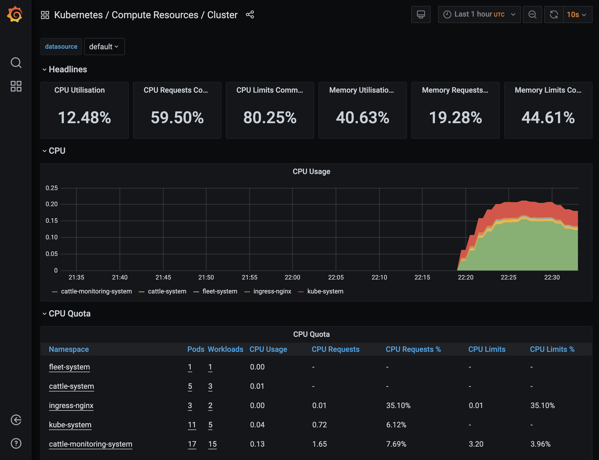
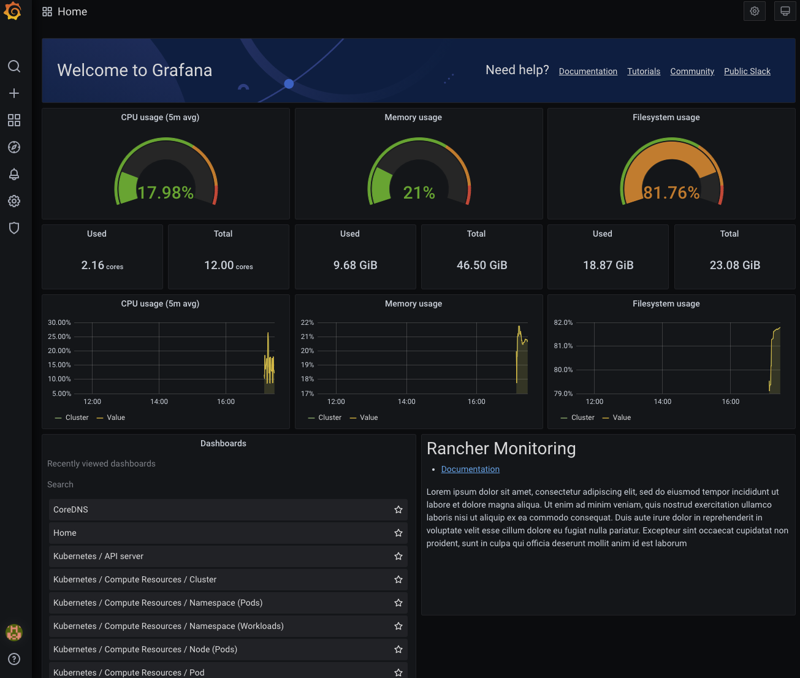

Contrôle d’accès en fonction du rôle
Cette section décrit les attentes concernant le RBAC pour Rancher Monitoring.
Administrateurs de cluster
Par défaut, seuls ceux ayant le rôle de cluster-admin ClusterRole devraient être en mesure de :
-
Installer l’appli
rancher-monitoringsur un cluster et effectuer toute autre configuration pertinente sur le déploiement du chart-
par exemple, si des tableaux de bord par défaut sont créés, quels exportateurs sont déployés sur le cluster pour collecter des métriques, etc.
-
-
Créer / modifier / supprimer des déploiements Prometheus dans le cluster via des CR Prometheus
-
Créer / modifier / supprimer des déploiements Alertmanager dans le cluster via des CR Alertmanager
-
Persister de nouveaux tableaux de bord ou sources de données Grafana en créant des ConfigMaps dans l’espace de noms approprié
-
Exposer certaines métriques Prometheus à l’API des métriques personnalisées k8s pour HPA via un Secret dans l’espace de noms
cattle-monitoring-system
Utilisateurs avec des permissions basées sur les rôles de cluster Kubernetes
Le chart rancher-monitoring installe les trois ClusterRoles suivants. Par défaut, ils s’agrègent dans le k8s ClusterRoles correspondant :
| ClusterRole | Agrégation vers le ClusterRole Kubernetes par défaut |
|---|---|
|
|
|
|
|
`view ` |
Ces ClusterRoles fournissent différents niveaux d’accès aux CRD de Monitoring en fonction des actions qui peuvent être effectuées :
| CRDs (monitoring.coreos.com) | Admin | Modifier | Afficher |
|---|---|---|---|
<ul><li> |
Obtenir, Lister, Surveiller |
Obtenir, Lister, Surveiller |
Obtenir, Lister, Surveiller |
<ul><li> |
* |
* |
Obtenir, Lister, Surveiller |
À un niveau élevé, les permissions suivantes sont attribuées par défaut en conséquence.
Utilisateurs avec des permissions d’administration/édition Kubernetes
Seules les personnes ayant le rôle de cluster-admin, admin ou edit ClusterRole devraient pouvoir :
-
Modifier la configuration de récupération des déploiements Prometheus via les CRs ServiceMonitor et PodMonitor
-
Modifier les règles d’alerte/enregistrement d’un déploiement Prometheus via les CRs PrometheusRules
Utilisateurs avec des permissions de visualisation Kubernetes
Seules les personnes ayant certaines permissions Kubernetes ClusterRole devraient pouvoir :
-
Voir la configuration des Prometheus déployés dans le cluster
-
Voir la configuration des Alertmanagers déployés dans le cluster
-
Voir la configuration de récupération des déploiements Prometheus via les CRs ServiceMonitor et PodMonitor
-
Voir les règles d’alerte/enregistrement d’un déploiement Prometheus via les CRs PrometheusRules
Rôles de surveillance supplémentaires
La surveillance crée également des Roles supplémentaires qui ne sont pas assignés aux utilisateurs par défaut mais qui sont créés dans le cluster. Ils peuvent être liés à un espace de noms en déployant un RoleBinding qui le référence. Pour définir un RoleBinding avec kubectl au lieu de passer par Rancher, cliquez ici.
Les administrateurs devraient utiliser ces rôles pour fournir un accès plus granulaire aux utilisateurs :
| Rôle | Fonction |
|---|---|
monitoring-config-admin |
Permettre aux administrateurs d’assigner des rôles aux utilisateurs pour pouvoir voir/modifier les Secrets et ConfigMaps dans l’espace de noms cattle-monitoring-system. Modifier les Secrets/ConfigMaps dans cet espace de noms pourrait permettre aux utilisateurs de modifier la configuration de l’Alertmanager du cluster, la configuration de l’adaptateur Prometheus, des sources de données Grafana supplémentaires, des secrets TLS, etc. |
monitoring-config-edit |
Permettre aux administrateurs d’assigner des rôles aux utilisateurs pour pouvoir voir/modifier les Secrets et ConfigMaps dans l’espace de noms cattle-monitoring-system. Modifier les Secrets/ConfigMaps dans cet espace de noms pourrait permettre aux utilisateurs de modifier la configuration de l’Alertmanager du cluster, la configuration de l’adaptateur Prometheus, des sources de données Grafana supplémentaires, des secrets TLS, etc. |
monitoring-config-view |
Permettre aux administrateurs d’assigner des rôles aux utilisateurs afin qu’ils puissent voir les Secrets et ConfigMaps dans l’espace de noms cattle-monitoring-system. La visualisation des Secrets / ConfigMaps dans cet espace de noms pourrait permettre aux utilisateurs d’observer la configuration de l’Alertmanager du cluster, la configuration de l’adaptateur Prometheus, des sources de données Grafana supplémentaires, des secrets TLS, etc. |
monitoring-dashboard-admin |
Permettre aux administrateurs d’assigner des rôles aux utilisateurs afin qu’ils puissent modifier / voir les ConfigMaps dans l’espace de noms cattle-dashboards. Les ConfigMaps dans cet espace de noms correspondront aux tableaux de bord Grafana qui sont persistés sur le cluster. |
monitoring-dashboard-edit |
Permettre aux administrateurs d’assigner des rôles aux utilisateurs afin qu’ils puissent modifier / voir les ConfigMaps dans l’espace de noms cattle-dashboards. Les ConfigMaps dans cet espace de noms correspondront aux tableaux de bord Grafana qui sont persistés sur le cluster. |
monitoring-dashboard-view |
Permettre aux administrateurs d’assigner des rôles aux utilisateurs afin qu’ils puissent voir les ConfigMaps dans l’espace de noms cattle-dashboards. Les ConfigMaps dans cet espace de noms correspondront aux tableaux de bord Grafana qui sont persistés sur le cluster. |
Assignation des rôles de surveillance via des rôles personnalisés
Les administrateurs peuvent assigner des rôles personnalisés dans l’interface utilisateur de Rancher pour l’administration, la modification et la visualisation de la surveillance. Ces "rôles" sont créés par défaut lorsque l’application de surveillance est installée. De plus, ces rôles sont également déployés dans les rôles Kubernetes correspondants : admin, edit et view ClusterRoles.
|
L’interface utilisateur n’offrira pas les options |
-
Créer le rôle personnalisé :
1.1 Click **☰ > Users & Authentication > Roles**. 1.2 Select the appropriate tab, e.g., **Cluster** role. Then click **Create Cluster Role**. 1.3 In the **Name** field, create a custom role such as `View Monitoring`, `Edit Monitoring`, or `Admin Monitoring`. 1.4 Click **Inherit From > Add Resource**, then select the Kubernetes role, as applicable, from the dropdown. 1.5 Click **Create**.
-
Assigner le rôle personnalisé à un nouvel utilisateur :
2.1 Click **☰ > Cluster Management > Cluster Explore > Cluster > Cluster Members > Add**. 2.2 Search for your new user name from **Select Member** options displayed. 2.3 Assign the new custom role from **Cluster Permissions** to the new user. 2.4 Click **Create**.
Résultat : Le nouvel utilisateur devrait maintenant être en mesure de voir les outils de surveillance.
Rôles de cluster de surveillance supplémentaires
La surveillance crée également des ClusterRoles supplémentaires qui ne sont pas assignés aux utilisateurs par défaut mais qui sont créés au sein du cluster. Ils ne sont pas agrégés par défaut mais peuvent être liés à un espace de noms en déployant un RoleBinding ou ClusterRoleBinding qui le référence. Pour définir un RoleBinding avec kubectl au lieu de passer par Rancher, cliquez ici.
| Rôle | Fonction |
|---|---|
monitoring-ui-view |
Ce ClusterRole permet aux utilisateurs ayant un accès en écriture au projet de visualiser les graphiques de métriques pour le cluster spécifié dans l’interface utilisateur de Rancher. Cela se fait en accordant un accès en lecture seule aux interfaces utilisateur de surveillance externes. Les utilisateurs ayant ce rôle ont la permission de lister les points de terminaison Prometheus, Alertmanager et Grafana et de faire des requêtes GET vers les interfaces utilisateur de Prometheus, Alertmanager et Grafana via le proxy Rancher. |
|
Un utilisateur lié au rôle Rancher View Monitoring et ayant des permissions de projet en lecture seule ne peut pas voir les liens dans l’interface utilisateur de surveillance. Ils peuvent toujours accéder aux interfaces utilisateur de surveillance externes s’ils reçoivent des liens vers ces interfaces. Si vous souhaitez accorder l’accès aux utilisateurs ayant le rôle View Monitoring et des permissions de projet en lecture seule, déplacez l’espace de noms |
Attribution de Rôles et ClusterRoles avec kubectl
Utilisation de kubectl create
Une méthode consiste à utiliser soit kubectl create clusterrolebinding soit kubectl create rolebinding pour attribuer un Role ou un ClusterRole. Cela est illustré dans les exemples suivants :
-
Attribuer à un utilisateur spécifique :
-
clusterrolebinding
-
rolebinding
kubectl create clusterrolebinding my-binding --clusterrole=monitoring-ui-view --user=u-l4npxkubectl create rolebinding my-binding --clusterrole=monitoring-ui-view --user=u-l4npx --namespace=my-namespace-
Attribuer à tous les utilisateurs authentifiés :
-
clusterrolebinding
-
rolebinding
kubectl create clusterrolebinding my-binding --clusterrole=monitoring-ui-view --group=system:authenticatedkubectl create rolebinding my-binding --clusterrole=monitoring-ui-view --group=system:authenticated --namespace=my-namespaceUtilisation de fichiers YAML
Une autre méthode consiste à définir des liaisons dans des fichiers YAML que vous créez. Vous devez d’abord configurer le RoleBinding ou le ClusterRoleBinding avec un fichier YAML. Ensuite, appliquez les modifications de configuration en exécutant la commande kubectl apply.
-
Rôles : Voici un exemple de fichier YAML pour vous aider à configurer
RoleBindingsdans Kubernetes. Vous devrez remplir le nom ci-dessous.
|
Les noms sont sensibles à la casse. |
# monitoring-config-view-role-binding.yaml
apiVersion: rbac.authorization.k8s.io/v1
kind: RoleBinding
metadata:
name: monitoring-config-view
namespace: cattle-monitoring-system
roleRef:
kind: Role
name: monitoring-config-view
apiGroup: rbac.authorization.k8s.io
subjects:
- kind: User
name: u-b4qkhsnliz # this can be found via `kubectl get users -A`
apiGroup: rbac.authorization.k8s.io-
kubectl : Voici un exemple d’une commande
kubectlutilisée pour appliquer la liaison que vous avez créée dans le fichier YAML. N’oubliez pas de remplir le nom de votre fichier YAML en conséquence.kubectl apply -f monitoring-config-view-role-binding.yaml
Utilisateurs avec des autorisations basées sur Rancher
La relation entre les rôles par défaut déployés par Rancher (c’est-à-dire cluster-owner, cluster-member, project-owner, project-member), les rôles Kubernetes par défaut et les rôles déployés par le chart rancher-monitoring est détaillée dans le tableau ci-dessous :
| Rôle Rancher | Kubernetes Role | ClusterRole / Rôle de surveillance | ClusterRoleBinding ou RoleBinding ? |
|---|---|---|---|
cluster-owner |
cluster-admin |
S/O |
ClusterRoleBinding |
cluster-member |
admin |
monitoring-admin |
ClusterRoleBinding |
propriétaire de projet |
admin |
monitoring-admin |
RoleBinding dans l’espace de noms du projet |
membre de projet |
modifier |
monitoring-edit |
RoleBinding dans l’espace de noms du projet |
En plus de ces rôles par défaut, les rôles de projet Rancher suivants peuvent être appliqués aux membres de votre cluster pour fournir un accès à la surveillance. Ces rôles Rancher sont liés aux ClusterRoles déployés par le chart de surveillance :
| Rôle Rancher | Kubernetes ClusterRole | Disponible dans Rancher depuis | Disponible dans Monitoring v2 depuis |
|---|---|---|---|
Voir la surveillance* |
2.4.8+ |
9.4.204+ |
|
Un utilisateur lié au rôle Rancher Voir la surveillance et ayant des permissions de projet en lecture seule ne peut pas voir les liens dans l’interface utilisateur de surveillance. Ils peuvent toujours accéder aux interfaces utilisateur de surveillance externes s’ils reçoivent des liens vers ces interfaces. Si vous souhaitez accorder l’accès aux utilisateurs ayant le rôle Voir la surveillance et des permissions de projet en lecture seule, déplacez l’espace de noms |
Différences dans 2.5.x
Les utilisateurs ayant les rôles de membre de projet ou de propriétaires de projet assignés n’auront pas accès à Prometheus ou Grafana dans Rancher 2.5.x, car nous ne créons Grafana ou Prometheus qu’au niveau du cluster.
De plus, bien que les propriétaires de projet ne puissent toujours ajouter que des ServiceMonitors / PodMonitors qui collectent des ressources dans l’espace de noms de leur projet par défaut, les PrometheusRules ne sont pas limitées à un seul espace de noms / projet. Par conséquent, toutes les règles d’alerte ou règles d’enregistrement créées par les propriétaires de projet dans l’espace de noms de leur projet seront appliquées à l’ensemble du cluster, bien qu’ils ne puissent pas voir / modifier / supprimer des règles créées en dehors de l’espace de noms du projet.
Assignation d’accès supplémentaire
Si les administrateurs de cluster souhaitent fournir un accès administrateur/modification supplémentaire aux utilisateurs en dehors des rôles offerts par le chart de surveillance Rancher, le tableau suivant identifie l’impact potentiel :
| CRDs (monitoring.coreos.com) | Cela peut-il avoir un impact en dehors d’un espace de noms / projet ? | Impact |
|---|---|---|
|
Oui, cette ressource peut collecter des métriques à partir de toutes les cibles à travers l’ensemble du cluster (à moins que l’Opérateur lui-même ne soit configuré autrement). |
L’utilisateur pourra définir la configuration de nouveaux déploiements Prometheus au niveau du cluster qui devraient être créés dans le cluster. |
|
Non |
L’utilisateur pourra définir la configuration des nouveaux déploiements d’Alertmanager au niveau du cluster qui doivent être créés dans le cluster. Remarque : si vous souhaitez simplement permettre aux utilisateurs de configurer des paramètres tels que les Routes et les Récepteurs, vous devez plutôt fournir l’accès au Secret de configuration d’Alertmanager. |
<ul><li> |
Non, pas par défaut ; cela est configurable via |
L’utilisateur pourra configurer des scrapes par Prometheus sur des points de terminaison exposés par des Services / Pods dans l’espace de noms où il a reçu cette autorisation. |
|
Oui, les PrometheusRules sont à l’échelle du cluster. |
L’utilisateur pourra définir des règles d’alerte ou d’enregistrement sur Prometheus en fonction de n’importe quelle série collectée à travers l’ensemble du cluster. |
| Ressources k8s | Espace de noms | Cela peut-il avoir un impact en dehors d’un espace de noms / projet ? | Impact |
|---|---|---|---|
<ul><li> |
|
Oui, les Configs et Secrets dans cet espace de noms peuvent avoir un impact sur l’ensemble du pipeline de surveillance / d’alerte. |
L’utilisateur pourra créer ou modifier des Secrets / ConfigMaps tels que la configuration d’Alertmanager, la configuration de l’adaptateur Prometheus, les secrets TLS, des sources de données Grafana supplémentaires, etc. Cela peut avoir un large impact sur toute la surveillance / alerte du cluster. |
<ul><li> |
|
Oui, les Configs et Secrets dans cet espace de noms peuvent créer des tableaux de bord qui effectuent des requêtes sur toutes les métriques collectées à l’échelle du cluster. |
L’utilisateur pourra créer des Secrets / ConfigMaps qui persistent uniquement de nouveaux tableaux de bord Grafana. |
Contrôle d’accès basé sur les rôles pour Grafana
Rancher permet à tous les utilisateurs authentifiés par Kubernetes et ayant accès au service Grafana déployé par le chart de surveillance Rancher d’accéder à Grafana via l’interface utilisateur du tableau de bord Rancher. Par défaut, tous les utilisateurs capables d’accéder à Grafana se voient attribuer le rôle Viewer, ce qui leur permet de voir n’importe lequel des tableaux de bord par défaut déployés par Rancher.
Cependant, les utilisateurs peuvent choisir de se connecter à Grafana en tant qu’Admin si nécessaire. Le nom d’utilisateur et le mot de passe Admin par défaut pour l’instance Grafana seront admin/prom-operator, mais des identifiants alternatifs peuvent également être fournis lors du déploiement ou de la mise à niveau du chart.
Pour voir l’interface utilisateur de Grafana, installez rancher-monitoring. Ensuite :
-
Dans le coin supérieur gauche, cliquez sur ☰ > Gestion des clusters.
-
Sur la page Clusters, allez au cluster où vous souhaitez voir les visualisations et cliquez sur Explorer.
-
Dans la barre de navigation à gauche, cliquez sur Surveillance.
-
Click Grafana.

